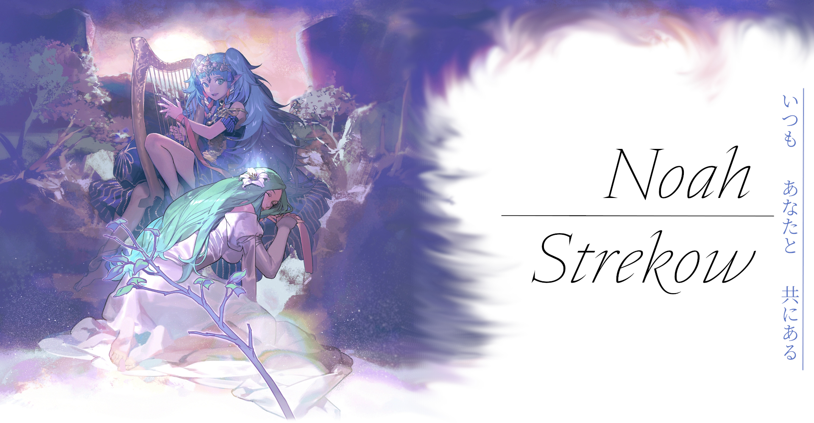

This is just a little place for me to throw together a bunch of information about myself, and my projects, to share with people in a convenient manner.
My name is Noah. Originally from Southern Wisconsin, I currently study Software Engineering and Cybersecurity as an undergraduate at Michigan Technological University.
I work for HubKonnect as an IT consultant and expect to work under faculity at Michigan Tech as a student researcher in cryptography during the summer of 2026.